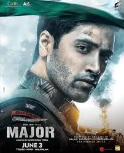

|  |
| Movie Duration | 3:30 hrs |
|---|---|
| Movie Director | Sashi Kiran Tikka |
| Movie Actor | Adivi Shesh |
| Movie Short Description | Based on the life of Major Sandeep Unnikrishnan, who fought during the November 2008 Mumbai attacks. Based on the life of Major Sandeep Unnikrishnan, who fought during the November 2008 Mumbai attacks. Based on the life of Major Sandeep Unnikrishnan, who fought during the November 2008 Mumbai attacks. |
| Songs: | |
| Back to home |